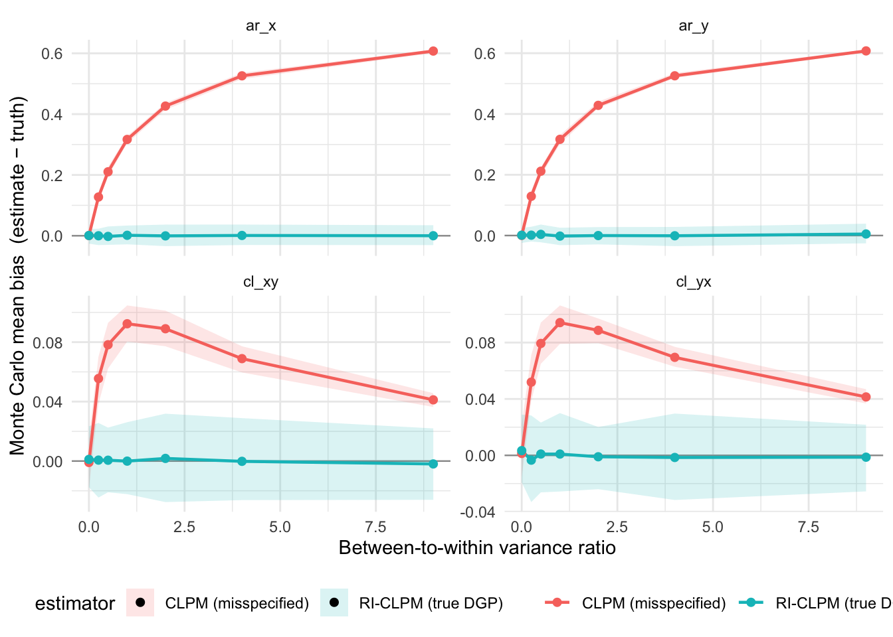

2 Revisiting the Cross-Lagged Panel Model
Social scientists often turn to panel data to diagnose causal effects when experiments are impractical (Chiu et al. 2025). Whereas dozens of options exist for analyzing longer time series, researchers wishing to analyze cross-sectionally dominant panel structures – in which there are more units than time points – face a more limited set of choices. National surveys like found in the American National Election Studies (ANES) may consist of just a handful of waves, with many respondents interviewed only once or twice.
We consider of the popular methods for analyzing panel data in political science. We start by focusing on a common approach to estimate dynamic processes in panel data (particularly public opinion panel data that are “cross section” dominant, with far more respondents than panel waves: the cross-lagged panel model (CLPM). The CLPM – introduced by Stanley and Campbell (1963) and extended on by Kenny (1975) – has been widely used to study reciprocal relationships between variables over time. These methods first appeared in the political science literature in the late 1970s Meier and Campbell (1979). The availability of two large panel surveys with rich political content – Jennings and Niemi’s Jennings and Niemi (1974) socialization study and the ANES 1972-1974-1976 panel – likely promoted the CLPM’s adoption, as most of the cross-lagged analyses published in this era analyze these two datasets. Another factor leading to the widespread adoption of the CLPM was the availability of Jöreskog’s LISREL software, which allowed researchers to quickly and easily solve systems of equations using maximum likelihood (Markus 1979a; McCullough 1978; Shingles 1976).
Much of the CLPM’s appeal lies in its intuitive structure, flexibility, and ease of implementation. In the half century after its introduction, the CLPM has also been refined and extended, due to important limitations in its original formulation. For instance, the model can account for unobserved heterogeneity across individuals – stable characteristics of individuals that confound the “dynamic” estimates in the CLPM (Usami, Hayes, and McArdle 2015; Usami 2021; Klopack and Wickrama 2020; Kim and Steiner 2021; Lüdtke and Robitzsch 2022; McArdle 2009). Because the CLPM does not account for stable unit effects, the cross-lagged estimates will tend to be biased (upwards), as they conflate within-person dynamics with between-person differences. Though not directly referenced as a critique of the CLPM, Hsiao (2022) shows that including a lagged dependent variable will produce a biased estimate of the lagged effect, because the variable is correlated with the error term. The correlation arises from the failure to account for “between unit” heterogeneity (pp. 64 -67). As a consequence, CLPM estimates may be biased, especially when the variables of interest exhibit high stability over time (Hamaker, Kuiper, and Grasman 2015; Usami, Hayes, and McArdle 2015; Lüdtke and Robitzsch 2022).
This problem is elaborated on in Hsiao (2022). Dynamic models – models that include lagged dependent variables – often result in correlations between the observed variables and the error terms, leading to biased estimates. Hsiao (2022) proposes and instrumental variable approach using lagged values of the dependent variable as instruments. When stable unit effects are ignored, the lagged dependent variable becomes correlated with the error term, violating the exogeneity assumption. This correlation leads to biased estimates of the lagged effect.
Another popular extension to the CLPM is the random intercept cross-lagged panel model (RI-CLPM) proposed in Hamaker, Kuiper, and Grasman (2015), which separates within-person dynamics from between-person “trait” effects (Usami, Hayes, and McArdle 2015; Lüdtke and Robitzsch 2022). Another approach is the Latent Change Score Model (LSCM), which focuses more directly on estimating different change processes; the LCSM also accounts for stable unit effects, by accounting for unit averaged change (Usami, Hayes, and McArdle 2015; McArdle 2009; Kim and Steiner 2021). Another alternative is the latent growth model (LGM), which models individual trajectories over time (Usami, Hayes, and McArdle 2015; McArdle and Nesselroade 2003).
Ultimately,preference for one model over another is strongly tied to data access and availability. While the CLPM and a restrictive version of the LCSM can be estimated with as few as two waves of data, the RI-CLPM, the Latent Growth Model, and Latent Change Score Model require more panel waves to properly identify the models. Data with three or more waves of data afford more leverage to estimate dynamic relationships. In this project, we elaborate on these models, beginning with the CLPM and change score approach to modeling dynamic relationships.
2.0.1 The CLPM Diagram
The CLPM can be represented as a Directed Acyclic Graph (DAG) Figure 2.1.
The CLPM – a dynamic panel model – leverages the temporal ordering of variables to estimate how one variable leads to change in another variable. Does the lagged effect of \(y\) on \(x\) exert a stronger influence than the lagged effect of \(x\) on \(y\)? Is one variable causally dominant (for a critique, see (Rogosa 1980)? Alternatively, contrasting the the cross-lagged effects is also critical to establishing Granger Causality (Granger 1969).
A crucial limitation of the CLPM is that it does not account for stable trait-like differences between individuals. Consider a simple example, the relationship between a personality characteristic, openness versus closed psychological orientation, and political attitudes, a right-wing political orientation Luttig (2021). Bakker, Lelkes, and Malka (2021) for instance, examines whether a psychological disposition towards openness predicts a right-wing political orientation, or whether a right-wing political orientation predicts a psychological disposition towards openness.
Political orientations are generally stable (Jennings and Niemi 1975; Goren 2005; Ansolabehere, Rodden, and Snyder 2008). It is also well regarded that personality traits are stable over time, and partially heritable (Costa and McCrae 1988; Roberts, Walton, and Viechtbauer 2006; Hatemi and Verhulst 2015).
The CLPM does not account for this time-invariant stability. It implicitly assumes that all variation in the observed variables is time-varying, and that there are no stable, time-invariant components.
Following Hamaker, Kuiper, and Grasman (2015) and Usami (2021), the observed variables might be further decomposed into a time-invariant trait component and a time-varying component.
\[ \begin{eqnarray} x_{it} = \mu_{xt} + I_{x,i} + x^*_{x,it} \\ y_{it} = \mu_{yt} + I_{y,i} + y^*_{y,it} \end{eqnarray} \]
where \(\mu_{xt}\) and \(\mu_{yt}\) are time-specific means, and \(x^*_{it}\) and \(y^*_{it}\) are person-specific deviations from those time-specific means (Usami, Murayama, and Hamaker 2019; Usami, Hayes, and McArdle 2015; Usami 2021).
Figure 2.2 provides a visual representation of a modified version of the CLPM with time-invariant trait components.
It is useful to ask the question: What if one fits Figure 2.1 but Figure 2.2 is the true population model. Assume the following model is estimated.
\[ \begin{align} x_{it} &= b^{CLPM}_{xx}\,x_{i,t-1} + b^{CLPM}_{yx}\,y_{i,t-1} + e_{x,it} \\ y_{it} &= b^{CLPM}_{yy}\,y_{i,t-1} + b^{CLPM}_{xy}\,x_{i,t-1} + e_{y,it} \end{align} \]
The conventional interpretation of the CLPM coefficients are that \(\beta_{xx}\), captures the autoregressive effect of \(x\) on itself, and \(\beta_{yy}\) does the same for \(y\). On the other hand, \(\beta_{yx}\) captures the cross-lagged effect of \(y\) on \(x\), and \(\beta_{xy}\) captures the cross-lagged effect of \(x\) on \(y\).
If Figure 2.2 captures the true data-generating process, the above intepretation of the CLPM parameters is incorrect.The degree of bias in the parameters should be proportional to the size of the trait component. In Figure 2.2, both \(I_x\) and \(I_y\) represent the time invariant trait components of the observed measures. The variance of \(x\) and \(y\) can be decomposed into a between-person component (the trait) and a within-person component (the deviation from the trait).
\[ \begin{aligned} {Var}(x_{it}) &= \text{Var}(I_{x,i}) + \text{Var}(x^*_{x,it})\\ {Var}(y_{it}) &= \text{Var}(I_{y,i}) + \text{Var}(y^*_{y,it}) \end{aligned} \]
\[ \begin{align} x^*_{it} &= b^{True}_{xx}\,x^*_{i,t-1} + b^{True}_{yx}\,y^*_{i,t-1} + e_{x,it} \\ y^*_{it} &= b^{True}_{yy}\,y^*_{i,t-1} + b^{True}_{xy}\,x^*_{i,t-1} + e_{y,it} \end{align} \]
Importantly, the percentage of the total variance attributable to the between-person component is the intraclass correlation: \(\text{ICC}_x \equiv \sigma^2_{I_x}/(\sigma^2_{I_x} + \sigma^2_{x^*})\), with \(\text{ICC}_y\) defined analogously.
The problem with fitting the CLPM to data generated by Figure 2.2 is that a non-zero covariance forms between the lagged regressors and the error terms. This is because the lagged regressor contains the trait component. The intuition is easiest to see through univariate estimates, estimating the cross-lagged and autoregressive effects individually — what one would estimate from \(x_t\) on \(x_{t-1}\) alone, or \(x_t\) on \(y_{t-1}\) alone..
\[ b_{xx}^{\text{univariate}} \equiv \frac{\text{Cov}(x_t, x_{t-1})}{\text{Var}(x_{t-1})} = \frac{\sigma^2_{I_x} + b^{\text{true}}_{xx}\,\sigma^2_{x^*}}{\sigma^2_{I_x} + \sigma^2_{x^*}} = \text{ICC}_x + (1-\text{ICC}_x)\,b^{\text{true}}_{xx}, \]
\[ b_{yx}^{\text{univariate}} \equiv \frac{\text{Cov}(x_t, y_{t-1})}{\text{Var}(y_{t-1})} = \frac{\sigma_{I_xI_y} + b^{\text{true}}_{yx}\,\sigma^2_{y^*}}{\sigma^2_{I_y} + \sigma^2_{y^*}} = \frac{\sigma_{I_xI_y}}{\sigma^2_{I_y} + \sigma^2_{y^*}} + (1-\text{ICC}_y)\,b^{\text{true}}_{yx}. \]
If the true autoregressive effect is zero (\(b^{\text{true}}_{xx}=0\)), then \(b_{xx}^{\text{univariate}} = \text{ICC}_x\) — the CLPM picks up a spurious AR equal to the ICC. If the true cross-lagged effect is zero (\(b^{\text{true}}_{yx}=0\)), then \(b_{yx}^{\text{univariate}} = \sigma_{I_xI_y}/(\sigma^2_{I_y}+\sigma^2_{y^*})\) — a spurious cross-lag driven entirely by the trait covariance. If the trait covariance is also zero (\(\sigma_{I_xI_y}=0\)), then \(b_{yx}^{\text{univariate}} = (1-\text{ICC}_y)\,b^{\text{true}}_{yx}\), i.e. attenuated by the share of variance that is between-person.
The multivariate CLPM includes both lags simultaneously, so its coefficients are partial slopes rather than these simple ratios. But the general intuition still holds. When \(\sigma^2_{I_x} > 0\), the AR is inflated by the trait variance, and the CL is contaminated by the trait covariance. When \(\sigma^2_{I_x} = 0\), there is no bias in the AR, but the CL is still attenuated by the between-person variance in \(y\).
2.1 Demonstration
The bias is proportional to the size of the trait component – how much of the total variance is defined by the between-person trait. This can be demonstrated with the crossLagR package and a simple simulation. We simulate data from a four-wave panel with the following truth values.
| Quantity | Value |
|---|---|
| waves | 4 |
| n_obs | 3000 |
| \(\sigma_{x^*}\) | 0.5 |
| \(\sigma_{I_x}\) | Varies |
| \(\sigma_{I_y}\) | Varies |
| \(b^{True}_{xx}\) (true) | 0.30 |
| \(b^{True}_{yy}\) (true) | 0.30 |
| \(b^{True}_{yx}\) (true) | 0.00 |
| \(b^{True}_{xy}\) (true) | 0.00 |
| \(\rho_I\) | 0.5 |

Abramowitz, Alan I. 1978. “The Impact of a Presidential Debate on Voter Rationality.” American Journal of Political Science 22 (3): 680–90. https://doi.org/10.2307/2110467.
Ansolabehere, Stephen, Jonathan Rodden, and James M. Snyder. 2008. “The Strength of Issues: Using Multiple Measures to Gauge Preference Stability, Ideological Constraint, and Issue Voting.” American Political Science Review 102 (2): 215–32. https://doi.org/10.1017/S0003055408080210.
Bakker, Bert N., Yphtach Lelkes, and Ariel Malka. 2021. “Reconsidering the Link Between Self-Reported Personality Traits and Political Preferences.” American Political Science Review 115 (4): 1482–98. https://doi.org/10.1017/S0003055421000605.
Campbell, James E., and Kenneth John Meier. 1979. “Style Issues and Vote Choice.” Political Behavior 1 (3): 203–15. https://doi.org/10.1007/BF00990588.
Chiu, Albert, Xingchen Lan, Ziyi Liu, and Yiqing Xu. 2025. “Causal Panel Analysis Under Parallel Trends: Lessons from A Large Reanalysis Study.” American Political Science Review. https://doi.org/10.48550/arXiv.2309.15983.
Costa, Paul T., and Robert R. McCrae. 1988. “Personality in Adulthood: A Six-Year Longitudinal Study of Self-Reports and Spouse Ratings on the NEO Personality Inventory.” Journal of Personality and Social Psychology 54 (5): 853–63. https://doi.org/10.1037/0022-3514.54.5.853.
Goren, Paul. 2005. “Party Identification and Core Political Values.” American Journal of Political Science 49 (4): 881–96. https://doi.org/10.1111/j.1540-5907.2005.00161.x.
Granger, C. W. J. 1969. “Investigating Causal Relations by Econometric Models and Cross-Spectral Methods.” Econometrica 37 (3): 424–38. https://doi.org/10.2307/1912791.
Hamaker, Ellen L., Rebecca M. Kuiper, and Raoul P. P. P. Grasman. 2015. “A Critique of the Cross-Lagged Panel Model.” Psychological Methods 20 (1): 102–16. https://doi.org/10.1037/a0038889.
Hatemi, Peter K., and Brad Verhulst. 2015. “Political Attitudes Develop Independently of Personality Traits.” PLOS ONE 10 (3): e0118106. https://doi.org/10.1371/journal.pone.0118106.
Hsiao, Cheng. 2022. Analysis of Panel Data. 64. Cambridge university press.
Iyengar, Shanto. 1978. “Testing the Transfer of Affect Hypothesis in a New Nation Using Panel Data.” American Journal of Political Science 22 (4): 905–16. https://doi.org/10.2307/2110598.
Jennings, M. Kent, and Gregory B. Markus. 1977. “The Effect of Military Service on Political Attitudes: A Panel Study.” American Political Science Review 71 (1): 131–47. https://doi.org/10.2307/1956958.
Jennings, M. Kent, and Richard G. Niemi. 1974. Political Character of Adolescence: The Influence of Families and Schools. Princeton University Press.
———. 1975. “Continuity and Change in Political Orientations: A Longitudinal Study of Two Generations.” American Political Science Review 69 (4): 1316–35. https://doi.org/10.2307/1955291.
Kenny, David A. 1975. “Cross-Lagged Panel Correlation: A Test for Spuriousness.” Psychological Bulletin 82 (6): 887.
Kim, Yongnam, and Peter M Steiner. 2021. “Gain Scores Revisited: A Graphical Models Perspective.” Sociological Methods & Research 50 (3): 1353–75.
Klopack, Eric T, and Kandauda Wickrama. 2020. “Modeling Latent Change Score Analysis and Extensions in Mplus: A Practical Guide for Researchers.” Structural Equation Modeling: A Multidisciplinary Journal 27 (1): 97–110.
Lüdtke, Oliver, and Alexander Robitzsch. 2022. “A Comparison of Different Approaches for Estimating Cross-Lagged Effects from a Causal Inference Perspective.” Structural Equation Modeling: A Multidisciplinary Journal 29 (6): 888–907.
Luttig, Matthew D. 2021. “Reconsidering the Relationship Between Authoritarianism and Republican Support in 2016 and Beyond.” The Journal of Politics 83 (2): 783–87. https://doi.org/10.1086/710145.
Markus, Gregory B. 1979a. Analyzing Panel Data: An Introduction. Edited by Michael S. Lewis-Beck. Quantitative Applications in the Social Sciences 18. Newbury Park, CA: Sage Publications.
———. 1979b. “The Political Environment and the Dynamics of Public Attitudes: A Panel Study.” American Journal of Political Science 23 (2): 338–59. https://doi.org/10.2307/2111006.
Markus, Gregory B., and Philip E. Converse. 1979. “A Dynamic Simultaneous Equation Model of Electoral Choice.” American Political Science Review 73 (4): 1055–70. https://doi.org/10.2307/1953989.
McArdle, John J. 2009. “Latent Variable Modeling of Differences and Changes with Longitudinal Data.” Annual Review of Psychology 60 (1): 577–605.
McArdle, John J, and John R Nesselroade. 2003. “Growth Curve Analysis in Contemporary Psychological Research.” Handbook of Psychology, 447–80.
McCullough, B. Claire. 1978. “Effects of Variables Using Panel Data: A Review of Techniques.” The Public Opinion Quarterly 42 (2): 199–220.
Meier, Kenneth J., and James E. Campbell. 1979. “Issue Voting: An Empirical Examination of Individually Necessary and Jointly Sufficient Conditions.” American Politics Quarterly 7 (1): 21–50. https://doi.org/10.1177/1532673X7900700102.
Roberts, Brent W., Kate E. Walton, and Wolfgang Viechtbauer. 2006. “Patterns of Mean-Level Change in Personality Traits Across the Life Course: A Meta-Analysis of Longitudinal Studies.” Psychological Bulletin 132 (1): 1–25. https://doi.org/10.1037/0033-2909.132.1.1.
Rogosa, David. 1980. “A Critique of Cross-Lagged Correlation.” Psychological Bulletin 88 (2): 245–58. https://doi.org/10.1037/0033-2909.88.2.245.
Shingles, Richard D. 1976. “Causal Inference in Cross-Lagged Panel Analysis.” Political Methodology 3 (1): 95–133.
Stanley, Julian C, and Donald T Campbell. 1963. Experimental and Quasi-Experimental Designs for Research. Chicago: R. McNally.
Usami, Satoshi. 2021. “On the Differences Between General Cross-Lagged Panel Model and Random-Intercept Cross-Lagged Panel Model: Interpretation of Cross-Lagged Parameters and Model Choice.” Structural Equation Modeling: A Multidisciplinary Journal 28 (3): 331–44.
Usami, Satoshi, Timothy Hayes, and John J McArdle. 2015. “On the Mathematical Relationship Between Latent Change Score and Autoregressive Cross-Lagged Factor Approaches: Cautions for Inferring Causal Relationship Between Variables.” Multivariate Behavioral Research 50 (6): 676–87.
Usami, Satoshi, Kou Murayama, and Ellen L. Hamaker. 2019. “A Unified Framework of Longitudinal Models to Examine Reciprocal Relations.” Psychological Methods 24 (5): 637–57. https://doi.org/10.1037/met0000210.